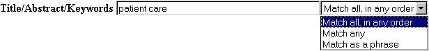
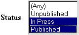
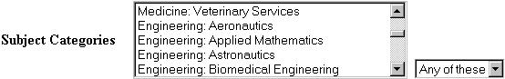
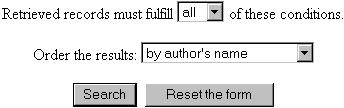

There are two principle methods for accessing documents in the archive, browsing, and searching. These are described below.
There are other ways in which a document may be reached:
When you reach a document in the archive, normally you'll be presented with a page called the abstract page. This page will display some information about the document, usually including an abstract an full reference, and will show you in what full text format(s) the document is available for retrieval.
Browsing is a good way to access documents if you don't have a specific idea of what you're looking for. You can browse through a catalogue of subject areas, and when you reach a subject you're interested in, you can select documents that interest you from the list you're presented with.
To access the subject browse display, either select Browse by Subject from the front page of the archive, or select Browse on the left-hand navigation bar elsewhere on the site.
You'll start with an overview of the subjects covered by the system. Next to most subjects is a number in brackets; this is the number of documents held in the archive pertaining to that subject. Select a subject that interests you, and the display will updated. If you have selected a subject with documents in the archive, those documents will be listed on the display. Some of the subject catalogue will also be displayed at the top of the page, and you can click on these to move to other subject areas. To access a paper, simply click on its reference in the display.
On the abstract page, you should be able to see what subjects are pertinent to the current document. Clicking on one of those subjects will take you back to the relevant browse by subject view.
The archive offers two levels of searching, simple and advanced. They are similar, but the advanced form lets you perform a finer-grained search using more fields. Access the simple search using the Search the Archive link on the front page, or using the Search option on the left-hand navigation bar elsewhere in the archive. To perform an advanced search, use the advanced search link at the top of the simple search page.
Generally, there are three types of search field.
These are used to search fields like abstract or author. These are the fields where there is a text entry area, and a popup menu just to the right of it, as shown in figure 1.

Figure 1: Text Search Field
Type your search terms into the box. You can decide how the system will use your search terms by selecting one of the options from the popup menu just to the right of the box:
With these you can select one or more values from a list of values for the system to search for. In the example shown in figure 2, the system will retrieve ``In Press'' and ``Published'' articles, but not ``Unpublished'' articles. If no value in the list is selected, the system will not filter out records in the search using this field (i.e. it will retrieve records with any value for this field.)

Figure 2: List Search Field
In cases where each individual record may have more than one value attached to the list, you can also change search behaviour by selecting ``Any of these'' or ``All of these'' from the popup menu on the right of the list, as shown in figure 3.

Figure 3: List Search Field Popup Menu
Again, if no value or ``Any'' is selected, the field is not used to retrieve records.
When you're searching a year field, you can specify a single year or range of years that you're interested in:
Some fields can have the value yes or no, for example the ``Refereed'' field. In this case, the search field lets you specify whether you want retrieved records to have the value yes or no for this field, or whether you have no preference, in which case the field isn't used to find records.
At the bottom of each search screen, you can set a couple of search options, using two popup menus. This is shown in figure 4.

Figure 4: Search Options
The topmost of the two lets you choose how strict your search should be:
Note that in either case, any search field where you haven't typed or selected anything, or selected ``any,'' will be ignored and will not be used during the search.
You can use the ``Order by results'' option to indicate to the system how to sort the retrieved records. Click on the ``Search'' button to initiate the search; the ``Reset the form'' button gives you a clean search form to start a new search.